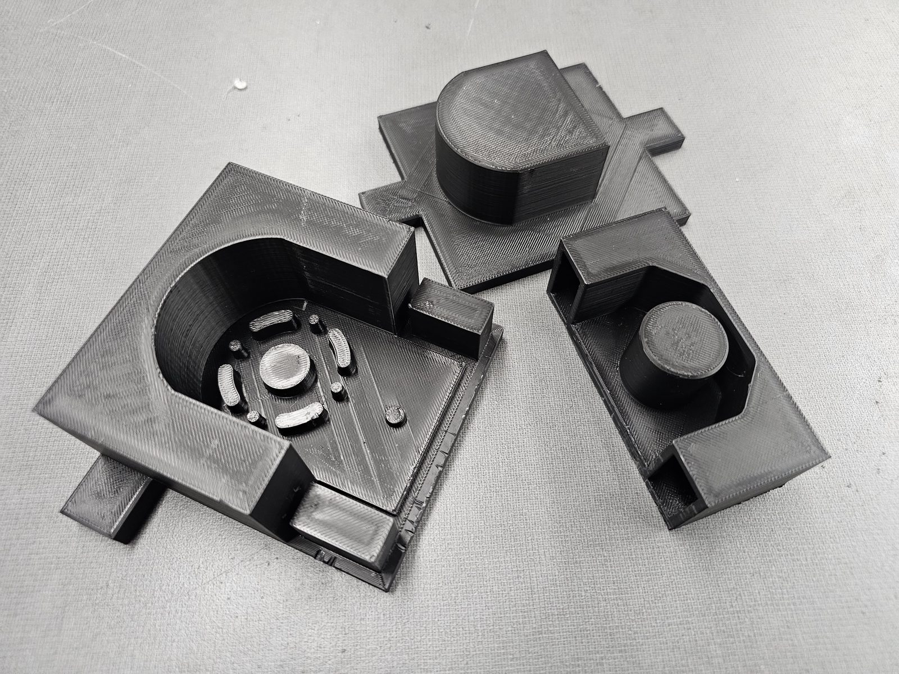
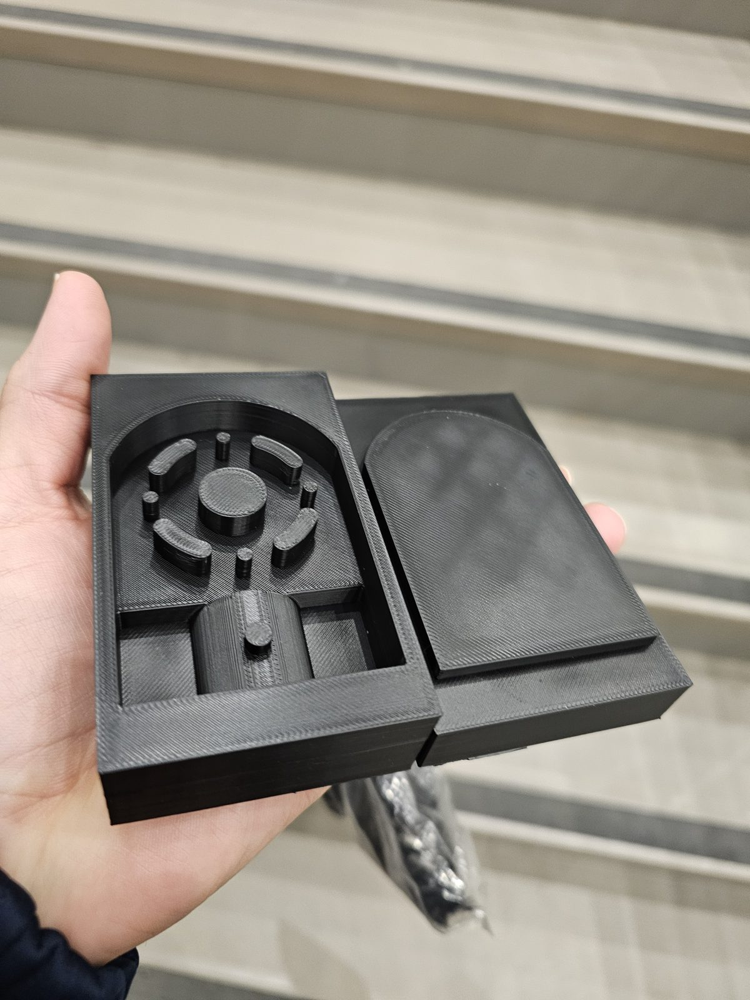
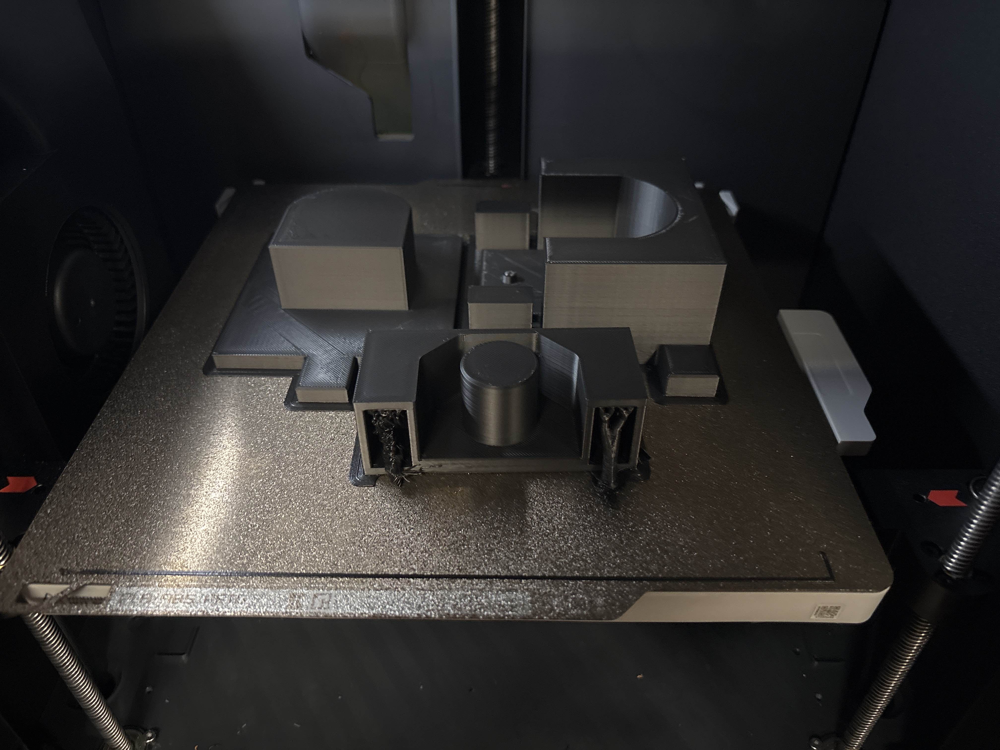
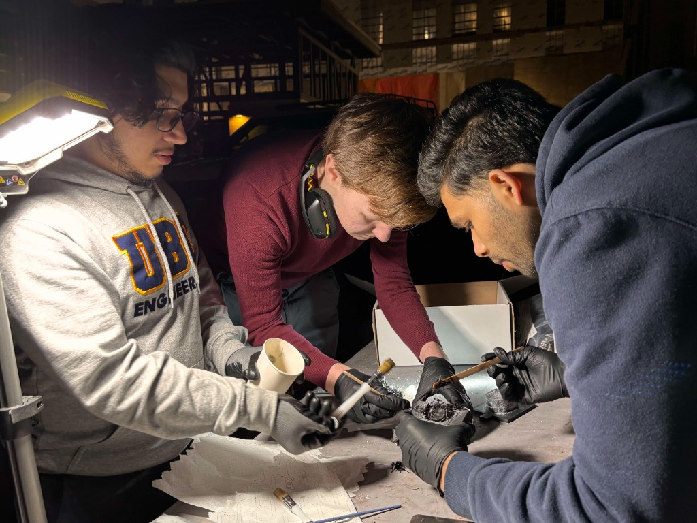
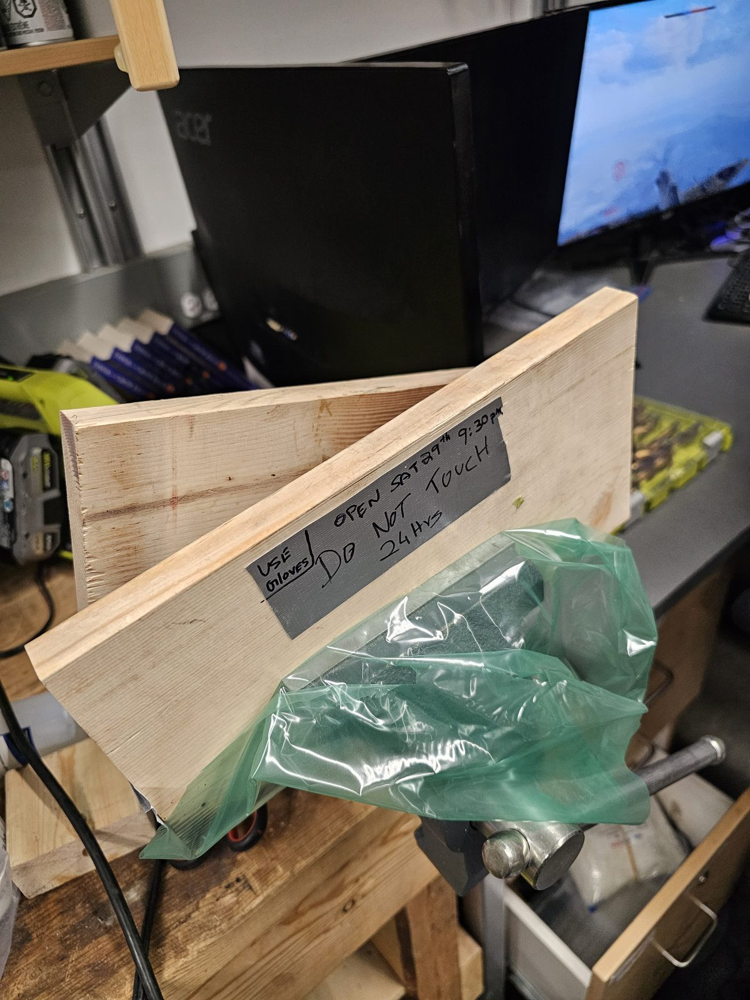
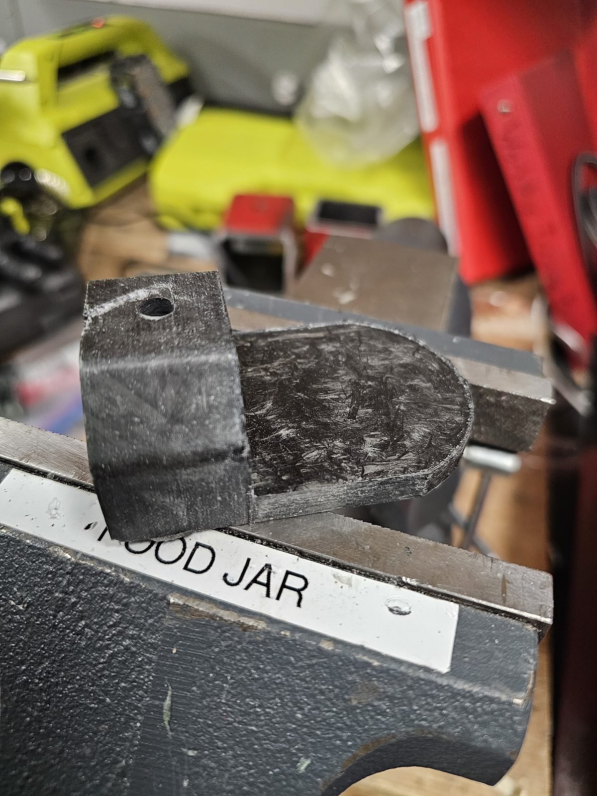
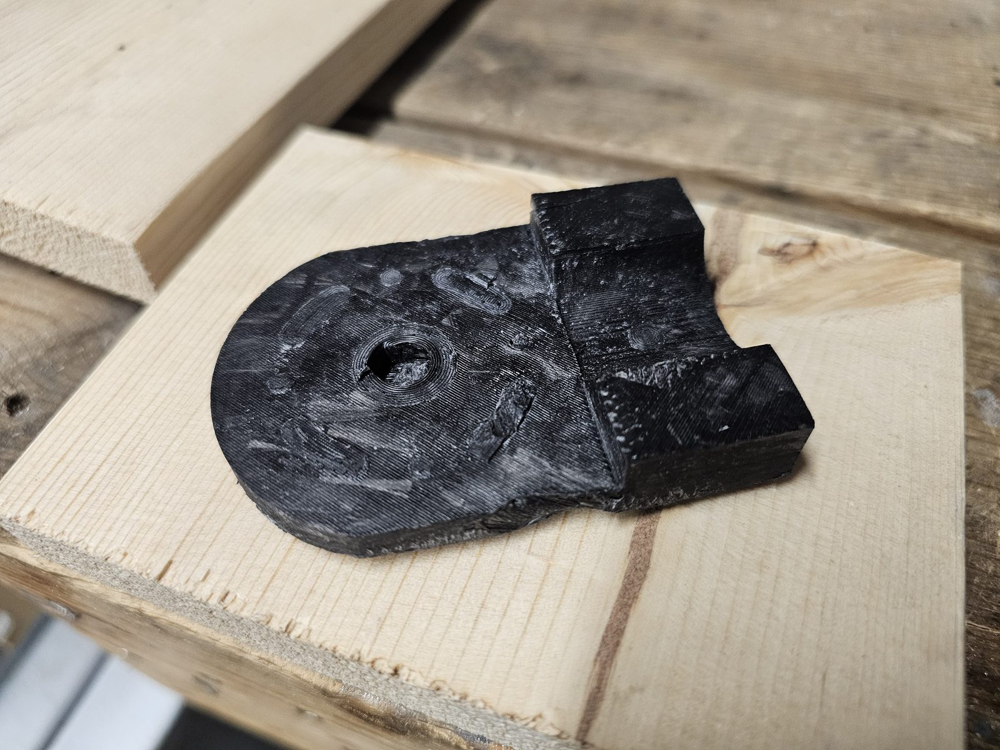
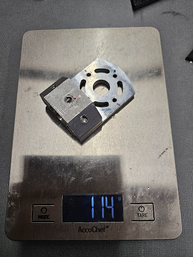
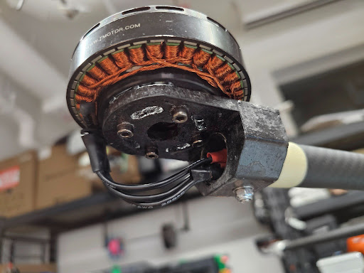

Forged Carbon Fiber Motor Mount
Mold design, iterative manufacturing, and hand-layup fabrication
The problem
Our drone's motor mounts were a machined aluminum assembly — one per motor, four per airframe. At 114 g each, they worked fine mechanically, but they were carrying structural mass the airframe didn't need. Reducing component weight was an active goal for the team, and the motor mounts were an obvious target.
My responsibility
As mold design & layup lead, I was responsible for developing a carbon-fiber replacement from geometry to finished part. That meant:
- Component design — model a drop-in replacement in SolidWorks that preserved the existing motor bolt pattern and mounting arm geometry exactly, so nothing else on the airframe needed to change.
- Mold design — design and iterate the manufacturing mold, including draft angles, vent placement, parting line, and clamping strategy.
- Manufacturing — hand-pack, cure, demold, and trim the parts; evaluate each result and feed observations back into the next mold version.
What I designed and built
I modeled the replacement geometry in SolidWorks, working directly from the motor's existing bolt pattern and mounting arm dimensions so the carbon part would be interchangeable with the aluminum original. I then designed the two-part manufacturing mold from scratch.
I chose a forged carbon approach — hand-packing chopped carbon tow and resin into a closed mold rather than a woven prepreg layup. The motor mount has a recessed bolt circle, a mounting arm, and a cable channel; chopped tow fills that 3D cavity more reliably than flat fabric would, and it was compatible with the equipment available.
The first mold was a starting point, not a finished design — it took several iterations before the parts came out clean.
How the mold evolved
The first pulls off the mold showed real problems. Each one pointed to a specific design decision that needed to change. I pulled the part, identified what the defect was telling me, updated the mold, and ran the next iteration:
| Ver. | What I observed | What I changed |
|---|---|---|
| v1 | Part stuck in the mold on demolding — side wall draft was too shallow to release cleanly | Added draft angle to the cavity side walls |
| v2 | Resin-starved patches near the thin mounting arm — resin likely migrating away from the arm under clamp pressure | Repositioned the vent path to redirect resin flow back toward the arm section |
| v3 | Inconsistent fiber distribution around the bolt holes — most likely from uneven hand-packing before mold closure | Changed packing sequence to fill the bolt-hole area first before closing the mold |
| v4 | Thick, uneven flash at the parting line — mold not closing evenly across its length | Refined the parting line geometry and added clamp points to distribute closing force |
Manufacturing cycle for each part: hand-pack chopped carbon tow with resin into the mold, clamp, cure 24 hours, demold, trim the flash, and compare the result against the previous version.
The result
The carbon mount fits the same bolt pattern and mounting arm as the aluminum original. No changes were needed anywhere else on the airframe. The scale photos below show both parts weighed against each other.
What I'd improve next time
Hand-packing chopped tow is sensitive to how evenly the material is distributed before the mold closes. Small differences in packing density showed up as visible variation in fiber distribution between parts. The parts are sound and are installed on the airframe — but if I were running another batch, or if tighter consistency were a requirement, I'd move to a matched-mold or vacuum-assisted process. Either approach would give more repeatable control over fiber volume fraction without fundamentally changing the tooling concept.
Mold design & manufacturing process





Finished part & weight comparison







Load testing